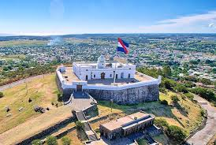

La capital de nuestro país, donde vive la mitad de la población

¿Por qué visitarlo?
Montevideo es la capital de Uruguay y su ciudad más grande. Está ubicada a orillas del Río de la Plata y se caracteriza por su mezcla de arquitectura histórica y una extensa rambla costera. Es el principal centro cultural, económico y político del país, con teatros, museos, parques y una vida urbana activa que combina tradición y modernidad.
Listado de sitios de interes
Rambla de Montevideo
Fortaleza del Cerro
Museo Zoológico Dámaso Antonio Larrañaga
Museo Oceanográfico de Montevideo
Castillo Pittamiglio
¿Qué hacer?
Rambla de Montevideo: Es ideal para visitar con termo y mate a admirar la puesta del sol o simplemente caminar por ella
Museo Zoológico Dámaso Antonio Larrañaga: Para los interesados en la naturaleza ya se actual o la que en un pasado habitó la region este es un lugar ideal debido a sus animales conservados con taxidermia y a fosiles antiguos como los de el "Ave Terrible"
Museo Oceanográfico de Montevideo: Si te gustaría conocer sobre la biodiversidad del oceano este museo es un lugar donde detenerse
Castillo Pittamiglio: Es un edificio histórico y museo de Montevideo con una arquitectura muy particular. Fue la casa del arquitecto Humberto Pittamiglio y destaca por sus pasillos laberínticos y su estilo inspirado en símbolos alquímicos
¿Cómo llegar?
Se recomienda el uso de apps como Moovit para conocer lineas de omnibus que lleven a los puntos de interes antes mencionado u otros desde el lugar que te encuentres